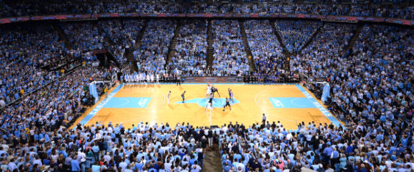

COMM 2024
Dale Jenkins
Course Description
COMM 2024, Media Writing, covers several aspects that any future journalist needs to know. From writing press releases, to opinion pieces for a news outlet, or conducting a question and answer interview with a media professional. This class covers all of these aspects, while operating under the AP style guide for technical wrtiting. In operating under this high level of scruntiny, great attention to detail must be enforced and this class teaches you to maintain a sharp focus and think outside of the box to get the best possible story written.
Teacher's Bio / Interests
Professor Jenkins enjoys reading, editing professional papers and watching the University of North Carolina Tar Heels in his spare time. Outside of that, he has spends much of his time reading, watching the news in an effort to stay up to date and educate the class as young journalists and he also edits professional works as well.
My Opinion
This class is challenging to say the least, but provides great life skills for those interested in a journalistic career. Having the knowledge and capabilities to effectively write for the mass media is incredibly important and will be a transferrable skill to any organization in which we become a part of following graduation. Furthermore, the sharp focus and detail not only applies to writing, but most work that we do.
Expected Grade
I expect either a very high B or low A in this class.